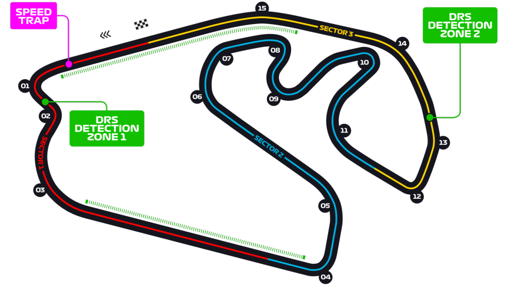

Grand Prix du Brésil
Informations
Nom du circuit
Autódromo José Carlos Pace
Lieu
Sao Paulo (Bresil)
Nombre de tours
71
Longueur du circuit
4.309 km
Distance de course
305.879 km
Dernier vainqueur
Max Verstappen
Classement nombres de victoires sur ce circuit
4 victoires - Michael Schumacher
3 victoires - Sebastian Vettel
3 victoires - Lewis Hamilton
Le saviez-vous ?
Le Grand Prix étant souvent fin de championnat, il a de nombreuses reprises décisif pour les pilotes voulant obtenir le titre mondial. Pour preuve le Grand Prix de 2007, qui fut une course mythique de la Formule 1. Kimi Räikkönen remporta son premier titre de champion du monde avec seulement un point d'avance sur Fernando Alonso et son coéquipier Lewis Hamilton, dont il était la première saison.
L'édition 2008 fut également très marquante pour les fans de Formule 1. Le pilote brésilien Felipe Massa a la possibilité de gagner le championnat s'il termine premier ou second de la course et si Lewis Hamilton ne fais pas mieux qu'un 6ème place. Felipe Massa passa la ligne d'arrivée en premier, et lui et son équipe crois avoir gagné, car Lewis Hamilton n'est alors que 6ème. Sauf que dans l'ultime virage, le pilote britannique dépassa le pilote devant lui et arracha le sacre mondial au pilote brésilien devant son public.
Lors du Grand Prix 2021, Lewis Hamilton fut tout simplement magistral. Partit dernier de la course sprint suite à une disqualification pour aileron arrière non-conforme, il gagna 15 places en 24 tours et termina 5ème. Le lendemain pour la course, il écopa de 5 places de pénalité suite à son changement de moteur. Partit de la dixième place, il parvint à remonter au fur et à mesure de la course et gagner après un record de 25 dépassements sur le week-end !